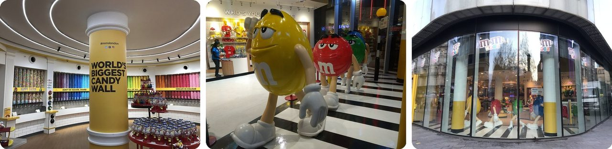
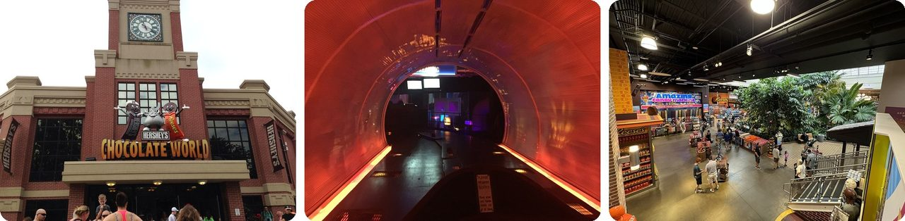
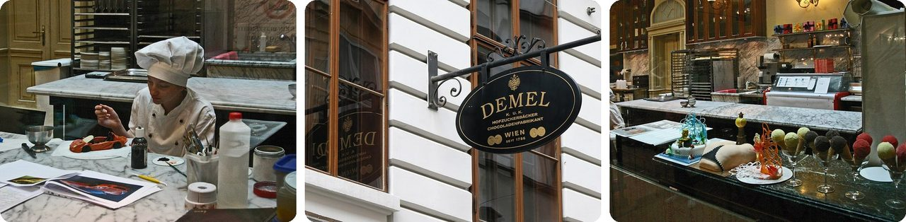

🌍 Top 10 Dulcerías famosas, divertidas y raras del mundo
27 de noviembre de 2026
1. 🏴 M&M's World de Londres es la dulcería más grande del planeta

M&M's World abrió en Leicester Square, en Londres, el 13 de junio de 2011. Con unos 35,000 pies cuadrados, es la dulcería más grande del mundo, más o menos del tamaño de 12 canchas de tenis.La ciudad quería convertir la plaza en un "destino de clase mundial", copiando la renovación de Times Square en Nueva York. Así que una dulcería gigante se mudó al viejo edificio del Swiss Centre.
No es la única. La primera M&M's World abrió en el Strip de Las Vegas en 1997, y la tienda de Nueva York tiene una "pared de chocolate" de dos pisos hecha con 72 tubos llenos de dulces.
Es una dulcería tan grande que cabría un torneo de tenis.
2. 🇺🇸 Dylan's Candy Bar empezó con un cumpleaños de Willy Wonka
 Dylan Lauren, hija del diseñador de moda Ralph Lauren, vio Willy Wonka y la fábrica de chocolate el día que cumplió seis años. Años después, en 2001, abrió su propia dulcería en Nueva York.
Dylan Lauren, hija del diseñador de moda Ralph Lauren, vio Willy Wonka y la fábrica de chocolate el día que cumplió seis años. Años después, en 2001, abrió su propia dulcería en Nueva York.
Dylan's Candy Bar tiene unos 7,000 dulces de todo el mundo. Lauren dijo que quería mezclar la moda, el arte y la cultura de los dulces.
En su mejor momento tuvo más de 20 tiendas. Su gran tienda del Upper East Side de Manhattan cerró en 2021 por problemas de dinero, pero la marca todavía tiene tiendas en Nueva York y Los Ángeles.
En resumen, el sueño de una niña con una película creció hasta volverse una dulcería de verdad.
3. 🇺🇸 Hershey's Chocolate World tiene un juego gratis con vacas que cantan

En Hershey, Pensilvania, antes dejaban que los visitantes recorrieran la fábrica de chocolate de verdad. Llegaba tanta gente que el recorrido ya no se daba abasto, así que el 30 de junio de 1973 Hershey abrió Chocolate World en su lugar.Su atracción principal es un juego gratis que muestra paso a paso cómo se hace el chocolate. Hoy el juego tiene vacas que cantan, y al final te dan un dulce de Hershey's gratis.
En 1988, el juego estrenó un robot anfitrión llamado CP-1. En menos de un año ya no estaba. Mientras tanto, Chocolate World recibió 1.4 millones de visitantes solo en su primer año.
Imagínalo como un juego mecánico que termina con postre.
4. 🇺🇸 Las tiendas de caramelo de Atlantic City vendieron dulces en cajas de ostiones
 Para 1880, los puestos de dulces del malecón de madera de Atlantic City, en Nueva Jersey, ya vendían taffy, un caramelo suave y masticable. Una historia muy popular dice que una tormenta salpicó agua de mar sobre un puesto de taffy, y el dueño lo vendió como "taffy de agua salada". Esa historia probablemente es inventada.
Para 1880, los puestos de dulces del malecón de madera de Atlantic City, en Nueva Jersey, ya vendían taffy, un caramelo suave y masticable. Una historia muy popular dice que una tormenta salpicó agua de mar sobre un puesto de taffy, y el dueño lo vendió como "taffy de agua salada". Esa historia probablemente es inventada.
Joseph Fralinger, que antes había sido soplador de vidrio y vendedor de pescado, se quedó con un puesto de taffy en 1884. Tuvo una idea: vender el taffy en cajas de una libra como recuerdo.
Compró 200 cajas para su primer fin de semana, y se acabaron el domingo a mediodía. Entonces corrió a un restaurante de mariscos cercano y terminó el día vendiendo taffy en cajas de ostiones. Hoy, tiendas de taffy de los años 1800 todavía lo venden en el malecón.
Dicho de otro modo, es un recuerdo de playa con el nombre de una tormenta que probablemente nunca pasó.
5. 🏴 La dulcería más vieja de Inglaterra está abierta desde 1827
 En el pueblito de Pateley Bridge, en North Yorkshire, hay una tienda que se llama la Dulcería Más Vieja de Inglaterra. Abrió en 1827, así que el año que viene cumple 200 años.
En el pueblito de Pateley Bridge, en North Yorkshire, hay una tienda que se llama la Dulcería Más Vieja de Inglaterra. Abrió en 1827, así que el año que viene cumple 200 años.
El edificio es todavía más viejo. Se construyó en 1661, así que ya tenía 166 años cuando abrió la dulcería.
En 2014, Guinness World Records la nombró la dulcería que lleva más tiempo abierta sin parar. Todavía vende dulces a la antigua, como bolitas de anís, regaliz y platillos voladores de polvo ácido.
Es una dulcería que ha atendido a unas ocho generaciones de niños.
6. 🇸🇪 Los bastones de menta de una viuda volvieron dulce a un pueblo sueco
 En 1858, el esposo de Amalia Eriksson murió pocos días después de que ella diera a luz, y la dejó sola con una bebé. En esa época, para una mujer en Suecia era muy difícil abrir un negocio. Pero los pueblos les daban un permiso especial a las viudas pobres, así que el 10 de enero de 1859, el pueblo de Gränna la dejó vender dulces.
En 1858, el esposo de Amalia Eriksson murió pocos días después de que ella diera a luz, y la dejó sola con una bebé. En esa época, para una mujer en Suecia era muy difícil abrir un negocio. Pero los pueblos les daban un permiso especial a las viudas pobres, así que el 10 de enero de 1859, el pueblo de Gränna la dejó vender dulces.
Ella hacía polkagris, bastones de menta rojos y blancos. El nombre significa "cerdito polka": la polka es un baile con muchas vueltas, y "cerdo" era una forma antigua de decirle a los dulces. La masa de azúcar se hierve, se estira y se tuerce a mano, y ella guardó la receta en secreto hasta que murió a los 99 años.
Hoy Gränna tiene solo unos 2,500 habitantes, pero recibe más de un millón de visitantes al año, y unas 20 tiendas venden polkagris ahí.
En resumen, el dulce de una sola mujer convirtió a todo un pueblo en una dulcería.
7. 🇦🇹 Demel, de Viena, se peleó con un hotel en los tribunales por un pastel de chocolate

Demel abrió en Viena en 1786. En 1874, el emperador lo nombró pastelero oficial de la corte real, y la emperatriz Isabel, conocida como Sissi, era clienta.Sus meseras todavía les hablan a los clientes de una forma antigua y súper educada. En vez de "¿Ya eligió?", preguntan algo como "¿Ya ha elegido uno?".
Luego vino la pelea del pastel. El Hotel Sacher y Demel vendían un pastel de chocolate llamado Sachertorte, y en 1954 el hotel demandó. Discutieron durante siete años por cosas como el nombre y una capa de mermelada. En 1963, el hotel se quedó con las palabras "The Original Sachertorte", y Demel con un sello de chocolate en forma de triángulo.
Imagínalo como dos pastelerías jugando siete años a la cuerda por un solo pastel.
8. 🇹🇷 Hacı Bekir, de Estambul, dice que inventó las delicias turcas en 1777
 En 1777, un dulcero llamado Bekir abrió una pequeña dulcería en Estambul. Después de hacer la peregrinación a La Meca, la gente empezó a llamarlo "Hacı", un título para quien ha hecho ese viaje.
En 1777, un dulcero llamado Bekir abrió una pequeña dulcería en Estambul. Después de hacer la peregrinación a La Meca, la gente empezó a llamarlo "Hacı", un título para quien ha hecho ese viaje.
La tienda dice que Bekir creó las delicias turcas modernas, o lokum, unos cubitos suaves de gelatina cubiertos de azúcar. Según la historia de la tienda, cambió la harina por almidón, y así quedaron suaves y masticables. Los historiadores no están tan seguros: hay dulces persas parecidos con siglos más de antigüedad, y no hay pruebas reales de que él los inventara.
De todos modos, el palacio otomano les compraba dulces, y a Bekir lo nombraron dulcero principal del palacio. Hoy la quinta generación de su familia dirige el negocio.
Dicho de otro modo, es una tienda que lleva casi 250 años presumiendo de un solo dulce.
9. 🇧🇷 La Confeitaria Colombo de Río parece un palacio de espejos
 Dos inmigrantes portugueses abrieron la Confeitaria Colombo, una dulcería y cafetería, en el centro de Río de Janeiro en 1894.
Dos inmigrantes portugueses abrieron la Confeitaria Colombo, una dulcería y cafetería, en el centro de Río de Janeiro en 1894.
Entre 1912 y 1918 la llenaron de espejos gigantes de cristal traídos de Amberes, en Bélgica, con marcos de palo de rosa tallado. En 1922 agregaron un segundo piso con un salón de té, y un hueco en el techo de la planta baja deja ver su tragaluz de vitral.
Tantos escritores y artistas famosos se juntaban ahí que la gente le decía "una sucursal de la Academia Brasileña de Letras". También la han visitado presidentes, un rey de Bélgica y la reina Isabel II.
Es una pastelería vestida de salón de baile.
10. 🇯🇵 Las dagashiya de Japón les venden dulces "sin valor" a los niños
 Los dagashi son dulces y botanas japonesas baratas, y una dagashiya es una tiendita que los vende. El nombre significa más o menos "botanas sin valor". Cada uno cuesta unos 10 a 200 yenes, lo bastante barato para el dinero que le dan a un niño.
Los dagashi son dulces y botanas japonesas baratas, y una dagashiya es una tiendita que los vende. El nombre significa más o menos "botanas sin valor". Cada uno cuesta unos 10 a 200 yenes, lo bastante barato para el dinero que le dan a un niño.
Están pensados para niños. Las envolturas de colores con mascotas ayudan a los que todavía no saben leer a escoger su favorito, y algunos traen un juguetito o la oportunidad de ganarse otro dulce gratis. Uno, el Fue Ramune, es un dulce con el que puedes chiflar.
De los años 50 a principios de los 80, las dagashiya eran el lugar para juntarse después de la escuela. Cuando los niños tuvieron más dinero para gastar a finales de los 80, muchas fueron reemplazadas por tiendas de conveniencia.
Así que es una dulcería hecha a la medida del bolsillo de un niño.
Dato curioso
El pastel por el que pelearon Demel y el Hotel Sacher quizá lo inventó un adolescente. Una historia dice que Franz Sacher creó la Sachertorte en 1832 para el príncipe Metternich, cuando Sacher tenía apenas 15 o 16 años y todavía estaba aprendiendo a cocinar. No hay pruebas escritas de esa fecha, pero su hijo Eduard la confirmó años después. Las comidas inventadas por niños y adolescentes podrían ser un tema muy dulce para explorar después.
Créditos de las fotos (Wikimedia Commons)
- #1: M&M'S London Wall of M&M'S Picture 2.jpg by Mepatm, CC BY-SA 4.0
- #1: M&M's World, London 1.jpg by Philafrenzy, CC BY-SA 4.0
- #1: M&M'S London Facade.jpg by Mepatm, CC BY-SA 4.0
- #2: Dylan's Candy Bar, New York City (1628512247).jpg by Casper Moller from London, United Kingdom, CC BY 2.0
- #2: Dylan's Candy Bar candy artwork (flickr) by Rachel from Cupcakes Take the Cake, CC BY 2.0
- #2: Dylan's Candy Bar, Miami.jpg by Phillip Pessar, CC BY 2.0
- #3: Hershey Chocolate World, Hersheypark, 2013-08-10.jpg by Paulo Ordoveza from Washington, DC, Public domain
- #3: 2015-09-30 Chocolate World Roaster.jpg by Hmich176, CC BY-SA 4.0
- #3: Hershey's Chocolate World interior.jpg by Toohool, CC BY-SA 4.0
- #4: James Saltwater Taffy Shop.jpg by Concord, CC BY-SA 4.0
- #4: Salt Water Taffy Stretching and Wrapping Machines.jpg by Visitor7, CC BY-SA 3.0
- #4: Colourful wrapped salt water taffy (3747358050).jpg by Lara604 from Seattle, WA, CC BY 2.0
- #5: The Oldest Sweet Shop in England, High Street, Pateley Bridge - geograph.org.uk - 4621491.jpg by Bill Harrison, CC BY-SA 2.0
- #5: Pateley Bridge High Street, 'The Oldest Sweet Shop in England' window display - geograph.org.uk - 7887746.jpg by Michael Garlick, CC BY-SA 2.0
- #5: Oldest Sweet Shop of England 02.JPG by Immanuel Giel, CC BY-SA 3.0
- #6: Making polkagrisar.jpg by Niklas Morberg, CC BY-SA 2.0
- #6: Polkagrisar in Granna.jpg by Niklas Morberg, CC BY-SA 2.0
- #6: Flickr - cyclonebill - Polkagris.jpg by cyclone bill, CC BY-SA 2.0
- #7: Wien-Kohlmarkt-48-Nr 14-Cafe Demel-2009-gje.jpg by Gerd Eichmann, CC BY-SA 4.0
- #7: Demel Vienna 2011.jpg by E-W, CC BY-SA 3.0
- #7: Wien-Kohlmarkt-44-Nr 14-Cafe Demel-2009-gje.jpg by Gerd Eichmann, CC BY-SA 4.0
- #8: Ali Muhiddin Hacı Bekir (1777).jpg by rg-fotos, CC BY-SA 2.0
- #8: Marzipan and lokum.jpg by E4024, CC BY-SA 4.0
- #8: Hacı Bekir - Kadikoy.jpg by E4024, CC BY-SA 4.0
- #9: Confeitaria Colombo (2) (6738795079).jpg by Leandro Neumann Ciuffo, CC BY 2.0
- #9: Confeitaria Colombo.JPG by Eugenio Hansen, OFS, CC BY-SA 3.0
- #9: Confeitaria Colombo, Rio.JPG by Eugenio Hansen, OFS, CC BY-SA 3.0
- #10: Dagashiya Isobe-Shouten Oct 2025.jpg by Chacmool, CC BY-SA 4.0
- #10: Dagashi-ya-no-yume-museum1.jpg by Jason1208, CC BY-SA 3.0
- #10: Itohikiame.png by Mozzucu, CC BY 4.0


.jpg){kind=link}


.jpg){kind=link}


.jpg){kind=link}


_(6738795079).jpg){kind=link}